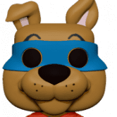
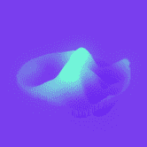
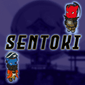
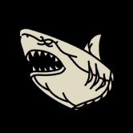
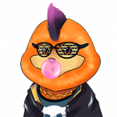
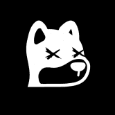
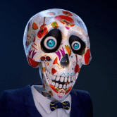
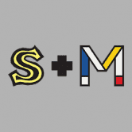
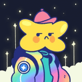
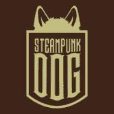

Invisible Friends 隐藏在元宇宙中。 Invisible Friends 是由 Markus Magnusson 创作的 5000 个动画隐形角色的集合。 隐形朋友是一个随机角色集体项目。 什么，谁，在哪里？ KITH 隐形朋友，真的吗？ 那是什么？ 五
IO: Imaginary Ones Imaginary Ones 是一个令人愉快的 3D 动画艺术，包含 8888 个独特的 NFT。 Imaginary Ones 希望重新点燃您的火花，拥抱创造力并为您的梦想而努力。 欢迎来到想象世界，那里没有太疯
IoTeX PUNKS IoTex PUNKS 是专为 IOTX 区块链设计的艺术像素集合！ 该系列由 10,000 个独特的 PUNKS 组成，只能通过随机过程铸造！ 每个 IOTX PUNK 都是独一无二的，设计有超过 100 种不同的属性和特征
Royal Society of Players 这些手工制作的卡片由世界著名的扑克牌艺术家和设计师 Oban Jones 设计，代表多达 7 种不同的稀有特性（包括特别版金色、彩虹色、加密和其他独特设计，向我们的
RTFKT Capsule Space Drip 1.2 RTFKT 在 2020 年 1 月 COVID 时代初期由三个朋友组成，诞生于元界，这已经定义了它的感觉。 RTFKT 是一个非常不拘一格、由创造者主导的组织。 RTFKT 使用最新的游戏引擎、NF
RTFKT SKIN VIAL: EVO X RTFKT SKIN VIAL：EVO X NFT 在过去 7 天内售出 117 次。 RTFKT SKIN VIAL: EVO X 的总销售额为 $90.13k。一个 RTFKT SKIN VIAL: EVO X NFT 的平均价格为 770.4 美元。共有 5,662 个 RTFKT SKIN VIAL: EVO X 拥
RTFKT x Nike Dunk Genesis CRYPTOKICKS RTFKT 与 Nike 携手推出首款 RTFKT x NIKE CRYPTOKICKS NFT：由 DRM OS 和 Skin Vial Tech 提供支持的 RTFKT X NIKE DUNK GENESIS CRYPTOKICKS 运动鞋。 请阅读：由于区块链在购买时处理更改的速度不够快，因此不要购买/
RugRadio Genesis NFT RUG RADIO 是第一个完全去中心化的媒体平台。 这是什么意思？ 这意味着我们的会员和我们的房东拥有您使用的平台。 它为什么如此重要？ 因为我们需要拥有叙述和模
Rumble Kong League Rumble Kong League 是一种具有竞争力的 3 对 3 篮球体验，将“玩赢”功能与 NFT 收藏机制相结合，使用户能够通过 NFT 以引人入胜的方式进行竞争。 使用一组独特的 10,000 个 ERC-721 令牌
Satoshibles Satoshibles 是比特币爱好者的 NFT。使用 192 个手绘属性生成的 5000 个算法生成的加密收藏 NFT 的集合，分布在 9 个特征上。每一件都是独一无二的，稀有程度不一。 Satoshibles 是第
ScalePunks 我们很高兴向您展示 - ScalePunks，这是在 Everscale 区块链上为您带来的第一个 NFT 朋克系列！ ScalePunks 是 10000 个独特朋克的集合，其中包括 9 个外星人、24 个猿猴
Schroot 任何人都给过我最好的建议：不要做白痴。 HODL 施鲁特。为什么？ Schroot 是一个 Alpha NFT 电钻。无情。贪得无厌。 Schroot NFT 是生活在区块链上的 8337 个 Schroot 的集合 那封电子邮件的内
 SCOOBY-DOO X FUNKO 金基！ Funko 以 Digital Pop!™ 的形式将神秘公司的帮派、怪物和恶棍带入生活！™ 拿起你的史酷比零食，准备完成你的收藏！收集任何传奇或圣杯稀有物品的 Digital Po
Secret Society of Odd Fellows Secret Society of Odd Fellows 是 888 个 Odd Fellows NFT 的集合——独特的数字收藏品，秘密生活在以太坊区块链上。您的 Odd Fellow 兼作您的 Secret Society 会员卡，并授予您访问会员专属福利的权限。 会员
 Secrets Exchange Secrets Exchange 以一对一、匿名和安全的方式将陌生人通过他们的秘密联系起来。当您提交秘密时，您会收到其他人提交的秘密，分享你的秘密并得到别人的。以及与他们
 Sentoki NFTs SENTOKI NFT 系列的目的是什么？ Sentoki 是 2888 个 Sentoki NFT 的集合——位于 Solana 区块链上的独特的诅咒数字战士。您的 Sentoki 兼作公民身份，可以访问 Norowareta Uchu 质押系统，每天赚取 10 美元 JU
 Shark Outlaw Squad Shark Outlaw Squad (SOS) 是 7,777 个以犯罪为主题的鲨鱼 NFT 的集合，其中包含两个对立的小队：Justice 和 Outlaw，它们将在镇上最大的小队战争的 D 日发生冲突。 这
 Shelby Dog NFT Shelby Dog 系列 - 这是 7777 NFT 的独特系列。 Shelby Dog 持有者将是第一个获得 SHELB 通货紧缩令牌和 SHELBYAPP 应用程序的人。此系列的所有 NFT 均受 QR 码保护！ Shelby Dog NFT 仅在 Polygon 网络上！ 合约：
 Shiba Social Club Shiba Social Club 是 7777 个 Shiba NFT 的集合，其灵感来自新一代富有的加密货币和 NFT。 每件作品都是独一无二的 3D 艺术品，集合了 150 多种特征。目标是围绕 NFT 建立最强大的社
Slacker Duck Pond SDP 是 6000 个独特的 Slacker Duck NFT 的集合——生活在以太坊区块链上的独特数字收藏品。 （所有权包括创意和商业权利，您可以随意使用。）SDP 是 6000 个独特的 Slacker Duck NFT 的
SmallBrosNFT 8888 Small Bros 在这里提醒你，在这段旅程中你永远不会孤单！ SmallBros 相信创造一个独特的环境和社区，同时结合物理世界和数字世界，使所有 Small Bros 能够相互联系，建立牢固
SNEAKER HEADS Official Sneakerheads 是由传奇艺术家和创始人 Ali Dawood 设计的 5000 个独特 NFT 的集合。超过 40 种精心设计的 3D 手绘基础模型具有无与伦比的细节水平 - 以前所未有的方式捕捉运动鞋的外观
SneakerFreakz SneakerFreakzL 7,000 个独特的 Polygon NFTs 100Ξ 在 Opensea 上的交易量：已验证的帐户。DAO 的创建开始。您拥有每个 SneakerFreakz NFT 在 DAO 中都 = 1 票。Opensea 上的 1000Ξ 交易量：3
Sneaky Vampire Syndicate 鬼鬼祟祟的吸血鬼集团由 8,888 名吸血鬼组成，每个吸血鬼都有自己的特点。 没有一个吸血鬼数量是一样的。 自古以来，情况发生了变化，吸血鬼已经赶上了时代，
Society of Derivative Apes 欢迎来到衍生猿协会 (SODA)，该协会收集了 9,999 只衍生猿。不隶属于我们派生的任何一个项目，在这里传播#SODAtivity！有多年后端开发经验
SOL DOGES SOLDOGES 是 Solana 区块链上第一个以 DOGE 为主题的 NFT。 Play to Earn 游戏和矢量动画 9999 Shiba Inu DOGE NFT 以编程方式生成并生活在 Solana 区块链和 Arweave 上。它们是 Solana 链上最酷的 DOGE NFT。这些
Soldiers Of The Metaverse 什么是元节 该术语是在尼尔·斯蒂芬森 1992 年的科幻小说《雪崩》中创造的，指的是物理、增强和虚拟现实在共享在线空间中的融合。简而言之，元宇宙是社交参
Soldiers Society 士兵协会是由 3333 名独特的像素艺术 NFT 士兵组成的有限营——生活在 Polygon 区块链上的独特数字收藏品。你的士兵不仅是你的化身，也是你的社团成员，为所有游戏玩
 Souls of Metaverse 元界之魂是精心挑选和设计的 2222 个 3D 和 2D 手工灵魂的集合。所有的灵魂都是独一无二的、不同的并且具有伟大的个性，这让灵魂伴侣能够感受到与他们每个人的
 SoupxMondrian Non-Fungible Soup x MondrianNFT 是 20 世纪两位标志性艺术家 Piet Mondrian 和 Andy Warhol 的混搭。 Art101.io 为 Non-Fungible Soup 和 MondrianNFT 的白名单所有者提供的三个多版安迪·沃霍尔和皮特·蒙德里安矢量混搭的独家纪念配套
SpacePunksClub Space Punks Club 是悬浮在以太坊区块链上的 10,000 个 AI 生成的收藏品的集合。所有 10,000 个 Space Punk 都是由 Seagull7x 专门为此项目手绘的 156 个属性以编程方式随机生成的Space Punks Club 是悬
Spooky Boys Mansion Party 在元界的深处，坐落于以太坊区块链雄辩的山丘上，有一个乡村俱乐部，以卓越、声望和尊重为定义。 Spooky Boys Country Club 提供 13,000 件独特的数字收藏品，通过所有权代表社
Spooky Skeletoons 修复了 TWWars 奖励分配的错误。 发布时间为 UTC 周二 18:00，现场会有不和谐。 （屏幕截图中的额外功能预告片）此外，初学者包今天仍然可以兑换，请在 http://Toonworldftm.com 中领
Squares on Chain Squares on Chain 是一个 100% 在链上创建的 NFT 集合。 它是一个自包含的机制，每个 NFT 都是独一无二的。 Squares on Chain NFT 的铸币价格是动态的，每次智能合约上的铸币调用都会增加 1
 Starcatchers Starcatchers 是由 10,000 名有趣的明星组成的集合。 我们的社区驱动项目旨在开发一个代表我们社区价值观的品牌，并弥合 web3 和物理世界之间的差距。 BAP 力学 一旦您的 BAP 上线，
 SteamPunkDog 蒸汽朋克狗 成为 NFT 历史的一部分，不要没有你的数字狗。 人类最好的朋友永远与你同在。 谁不爱狗？ 立即获取您的蒸汽朋克狗！ Steampunk Dog 是由全球专业艺术家创作的


，该协会收集了 9,999 只衍生猿。")